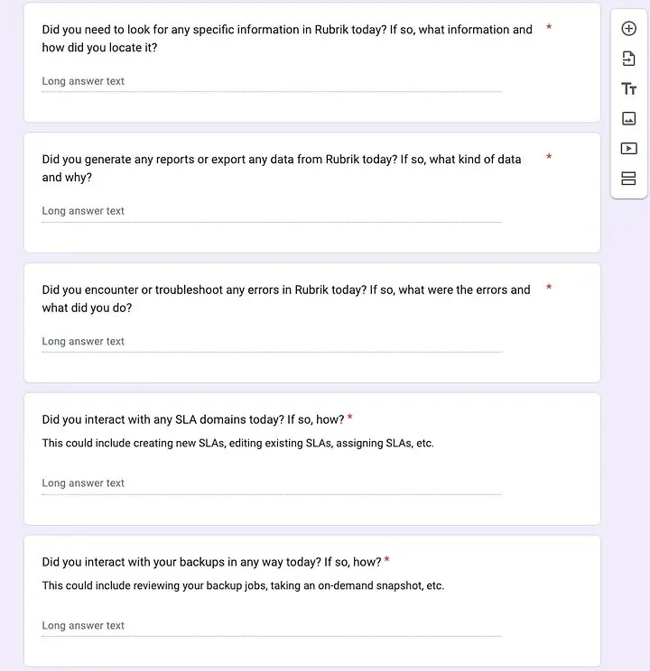
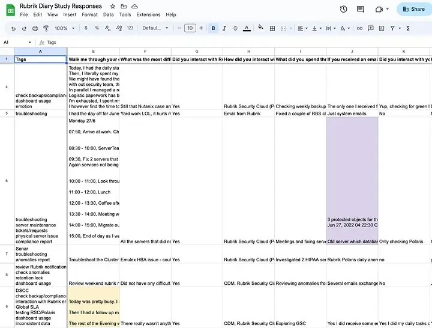
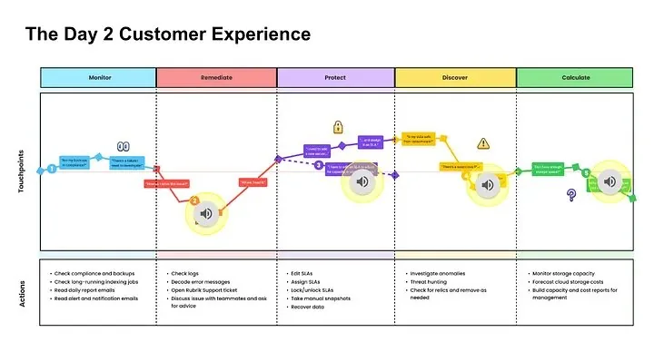
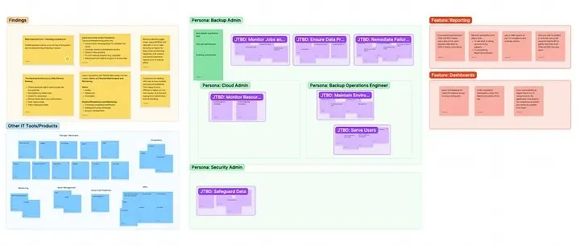
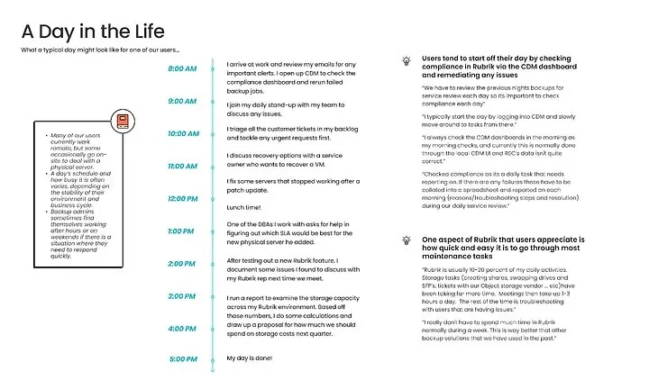

At Rubrik, the User Research team is driven by user insight to build better products. For one of Rubrik's core products, SLA domains, we understood how users set things up, but we knew much less about how they lived with the product afterward. What are their key tasks day to day? How do they behave? What trips them up? To find out, I launched a discovery project to map the daily activities of the backup admins using Rubrik — what I came to think of as the Day 2 Customer Journey.
This was the first time our research team had used a diary study at Rubrik, which made it a chance to build foundational research and greater empathy for our users across the company at the same time.
The Research Methodology
Since we wanted to explore behavior remotely, over multiple days, a diary study was the clear choice since it captures qualitative behavior by having participants record their activities each day over a period of time. It allows for the breadth of a longitudinal study and the depth of individual participant responses, which makes it ideal for building out a persona's journey.
Because the scope was broad, I first interviewed internal experts — Sales Engineers, Technical PMs, and Customer Success Engineers who are on the front line with customers — plus 3 customers in senior or management roles, to identify which categories of tasks and challenges mattered most. That gave me five areas to probe in the diary itself: Maintenance, Monitoring, Reporting, Troubleshooting, and Optimization.
Planning the Diary Study
Diary studies run longer and bigger than most research methods, so the logistics matter. I planned by setting up all the workflows ahead of time so I would have less to manage manually later.
Length
Based on prior research and tribal knowledge, we hypothesized that most backup admins follow a daily routine, occasionally interrupted by unexpected incidents. Three weeks (15 workdays) felt like enough time to surface real habits and usage scenarios.
Timing of the prompt
Backup admins are busy, and I didn't want to interrupt them mid-incident and risk a missed response. Instead, I scheduled the daily prompt near the end of each participant's workday, in their own timezone, using Gmail's "Schedule Send."
Diary medium
I chose a Google Form for the diary entry format since it's familiar, accessible, and allows submissions of text, photos, screenshots, video, or audio. In the last few days, I gave participants the option to record an audio note instead of writing. I hadn't planned for audio originally, but it turned out to be a favorite among participants who preferred talking about their day, and hearing their actual voices made the responses more natural and personal.
Diary questions
Each day's form opened broadly with a question asking them to walk through their day, and then narrowed into the five categories from the first research phase. Many questions repeated daily on purpose, so we could track how (or whether) answers changed over time. I also slipped in a few just-for-fun questions, like picking an emoji for how they were feeling, to help people loosen up and tap into how they actually felt, not just what they did.
Recruiting
Since a diary study is a record of daily activity, I recruited people who use Rubrik nearly every day. This included mostly Backup Admins, though many also wore Cloud Admin or Security Admin hats. In total: 9 participants across the US, UK, Belgium, and Sweden; industries spanning manufacturing, education, and IT tools; company sizes from under 100 to over 50,000 employees.
One thing I'd consider differently next time: a customer's stage of life with the product. Someone a few months into using Rubrik interacts with it very differently than someone who's settled into steady-state maintenance.
Staying in touch
It mattered that participants felt a personal connection to the study, so their answers stayed reflective rather than perfunctory. I sent everyone a one-pager on the project, held an intro call to explain things and get to know them, and scheduled a closing call after the final day to follow up on anything open.

Running the Diary Study
My manager gave me one piece of advice before this started: don't wait until the end to begin analysis. So every day, I read the previous day's entries, tagging them as I went — turning a pile of raw data into something I could actually keep up with, and letting me follow up with participants quickly if I needed more detail. I compiled every entry into a single spreadsheet, tagging each response as it came in.

It only took a few days for patterns to surface. Almost every backup admin started their morning by checking on overnight backups and triaging requests from colleagues. Their next steps depended on the urgency of what they saw on the global dashboard. No pressing issues meant time for maintenance or exploring a new feature while an issue with inconsistent backups meant the whole day went to investigation and remediation.

Some participants described working through the same problem over several days and they often leaned on past experience, teammates, or Rubrik support to troubleshoot. It was clear the product itself didn't offer enough guidance to resolve issues on its own.
The diary also gave us a zoomed-out view of how Rubrik fits into a backup admin's broader toolkit. Across customers, Rubrik was just one piece of an extensive IT ecosystem but it was essential to their core responsibility of ensuring compliant and reliable data. I came away with a real sense of how busy and complicated this job can be: hopping between tools, juggling teammates, occasionally firefighting after hours. Multiple participants said what they valued most about Rubrik was how it turned hard tasks into simple, manageable ones, especially compared to whatever they'd used before.
"That's what I like about Rubrik — you don't need to spend too much time on it." Diary study participant
It wasn't an insight specific to SLAs or backups, but it demonstrated what customers valued about Rubrik relative to other backup products: time and effort saved.
Data Synthesis & Deliverables
Working in FigJam, I clustered notes into Jobs-to-be-Done and paired with the personas who held them. I also included feature-specific findings and a map of the other IT tools in admins' lives.

From there I outlined a journey map telling the backup admin's story: the highs and lows, organized into Touchpoints, Actions, Quotes, Experiences, Pain Points, and Opportunities. I built supplementary artifacts as well: a persona card, and a "day in the life" of a typical backup admin.

The study also surfaced interactions beyond SLAs and backups (e.g. Reports and Errors) so I gave those areas their own detailed findings sections too. With everything built out in Figma, I put together a slide deck and presented it to immediate stakeholders, the design team, and at a Product & Design all-hands.
It was crucial to convey the most important takeaways in a visual and engaging way.
To bring the user to life on screen, I embedded audio clips of participants describing their points of friction, pulled straight from their diary entries and closing calls.
Hearing the voice of the users (literally!) helped build customer empathy among an audience who don't often interact with them directly.
Months after the share-out, product stakeholders were still referencing the project, which told me this research had staying power as a foundational artifact at Rubrik, not just a one-off readout.
What I Learned
This study was a unique learning experience for our users as much as for me. At the end, several participants said the diary gave them a chance to reflect on their own day and notice how they were actually spending their time at work and that they appreciated feeling heard and valued by contributing to it.
"Thank you for your time and engagement, it's always appreciated. It's nice to feel like we play a part in changing things for the better." Diary study participant, final entry